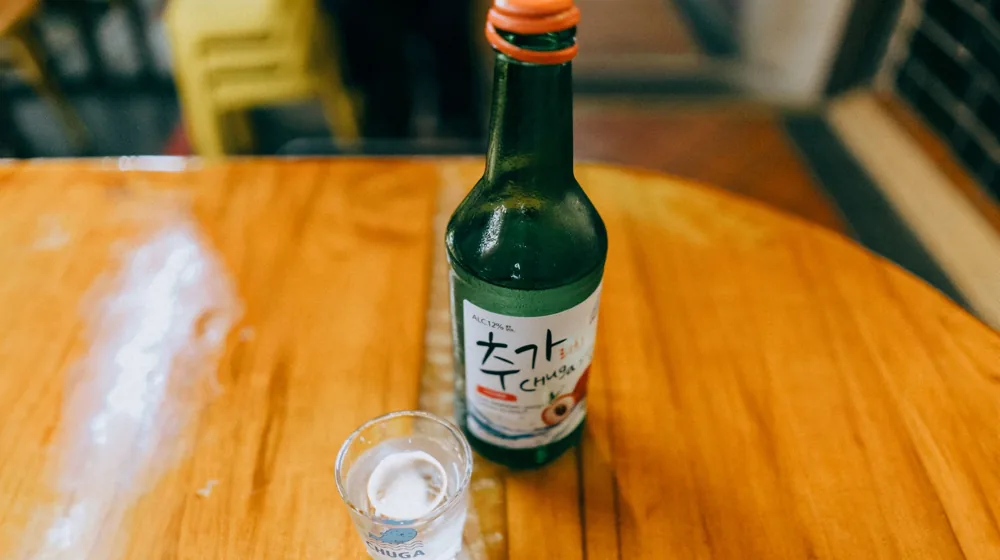

가양주 안주 페어링 완벽 가이드: 맛을 2배 살리는 4가지 공식
사진: Luis Becerra Fotógrafo / Pexels (무료 이미지, 출처 표기)
가양주 페어링의 대원칙: '동질성'과 '대비'

가양주(집에서 빚은 전통 술)를 직접 빚거나 선물 받아 마실 때, 어떤 음식을 곁들여야 할지 고민되셨을 겁니다. 시판 소주나 맥주와 달리, 가양주는 효모와 누룩의 자연스러운 풍미가 살아있어 안주 선택에 따라 술맛이 완전히 달라집니다. 실패 없는 페어링을 하려면 '동질성'과 '대비'라는 두 가지 대원칙만 기억하면 됩니다.
'동질성의 원칙'은 단맛이 도는 술에는 단맛이 있는 음식을, 신맛이 강한 술에는 산미가 있는 음식을 맞춰 서로의 캐릭터를 밀어주는 방법입니다. 반대로 '대비의 원칙'은 기름진 음식에 탄산이나 산미가 강한 술을 매칭하여 입안을 깔끔하게 헹궈주는 방식입니다. 이 두 가지 원칙을 바탕으로 가양주의 종류별 최적의 조합을 찾아보겠습니다.
탁주(막걸리) 페어링: 텁텁함을 잡고 감칠맛을 살리는 조합
가양주 중 가장 대중적인 탁주는 걸쭉한 바디감과 쌀에서 나오는 은은한 단맛, 그리고 미세한 산미가 특징입니다. 농촌진흥청 국립농업과학원의 전통주 페어링 가이드에 따르면, 탁주의 단맛은 매콤하거나 짭짤한 음식과 만났을 때 이른바 '단짠'의 매력이 극대화됩니다.
산미가 강하고 탄산감이 있는 탁주는 기름진 전이나 튀김류와 잘 어울립니다. 술의 산 성분이 기름진 맛을 씻어내 주기 때문입니다. 반대로 멥쌀 비중이 높아 드라이하고 묵직한 탁주는 양념 갈비나 제육볶음처럼 간이 세고 단백질이 풍부한 육류 요리와 훌륭한 조화를 이룹니다.
약주·청주 페어링: 섬세한 곡물 향을 가리지 않는 담백함
맑게 걸러낸 약주와 청주는 누룩 특유의 은은한 향과 부드러운 목 넘김이 특징입니다. 이 섬세한 향을 제대로 즐기려면 향과 간이 너무 강한 안주는 피하는 것이 좋습니다. 고춧가루, 마늘, 식초가 과도하게 들어간 음식은 약주의 미묘한 곡물 향을 완전히 가려버리기 때문입니다.
약주에는 가볍게 조리한 흰살생선회, 육회, 데친 두부, 혹은 제철 나물무침을 추천합니다. 재료 본연의 맛이 살아있는 담백한 음식을 곁들여야 약주가 가진 본연의 향긋함과 부드러운 단맛이 입안에서 은은하게 피어오릅니다.
증류식 소주 페어링: 고도수의 자극을 감싸주는 안주
가양주를 증류하여 만든 전통 소주는 대개 도수가 30~40도 이상으로 높습니다. 높은 알코올 도수는 입안을 마르게 하고 강한 타격감을 주기 때문에, 이를 부드럽게 감싸줄 수 있는 고단백, 고지방 안주가 적합합니다.
지방이 풍부한 삼겹살 구이, 한우 구이, 또는 따뜻하고 진한 국물 요리(조개탕, 어묵탕 등)가 증류주와 아주 잘 맞습니다. 기름진 음식이 위벽을 보호해주고, 증류주의 높은 도수가 입안의 기름기를 깔끔하게 정리해주어 마지막 한 모금까지 깔끔하게 즐길 수 있습니다.
가양주 주종별 추천 안주 요약표
어떤 안주를 준비해야 할지 한눈에 확인할 수 있도록 주종별 페어링 가이드를 표로 정리했습니다.
※ 수제 가양주는 보관 온도와 숙성 기간에 따라 맛의 편차가 클 수 있으므로, 안주를 상차림하기 전에 술을 먼저 한 모금 시음해보고 당도와 산도를 파악하는 것이 좋습니다.
가양주 홈파티 페어링 시 주의할 점 3가지
- 향신료 절제하기: 마라, 쯔란, 카레 등 향이 지나치게 강한 향신료는 가양주 고유의 누룩 향과 충돌하여 술맛을 망칠 수 있습니다.
- 온도감 맞추기: 차갑게 칠링해서 마시는 약주에는 시원한 음식을, 실온이나 따뜻하게 마시는 탁주나 소주에는 온기가 있는 음식을 곁들이는 것이 위장에 부담을 줄입니다.
- 수제 가양주의 산미 조절: 집에서 빚은 가양주가 발효가 과하게 되어 신맛이 강해졌다면, 달콤한 갈비찜이나 설탕을 가미한 안주를 곁들여 신맛을 중화시키는 편이 좋습니다.
🔗 이 글도 함께 보면 좋아요: 코스피 코스닥 차이 완벽 정리: 주식 초보라면 이것부터 구분하세요
관련 추천 상품
이 포스팅은 쿠팡 파트너스 활동의 일환으로, 이에 따른 일정액의 수수료를 제공받습니다.
자주 묻는 질문(FAQ) (탭하면 펼쳐져요)
Q1. 집에서 만든 가양주가 너무 시게 되었는데 어떤 안주가 좋을까요?
A. 신맛이 강한 가양주에는 단맛과 지방기가 있는 음식을 매칭하는 것이 좋습니다. 달콤 짭조름한 갈비찜이나 간장 양념의 불고기, 혹은 치즈가 듬뿍 올라간 요리를 곁들이면 신맛이 한결 부드럽게 중화되어 맛있게 즐기실 수 있습니다.
Q2. 수제 가양주 약주를 마실 때 서양식 안주도 어울리나요?
A. 매우 잘 어울립니다. 특히 염도가 낮고 고소한 연성 치즈(브리, 까망베르)나 멜론을 곁들인 하몽은 약주의 은은한 과실 향 및 산미와 아주 좋은 페어링을 보여줍니다. 양념이 강한 한식 안주보다 오히려 약주 고유의 향을 살려주기도 합니다.
Q3. 남은 탁주를 활용해서 안주를 만들 수 있는 방법이 있나요?
A. 남은 탁주는 밀가루 반죽에 섞어 '막걸리 전'을 부치거나, 돼지고기를 삶을 때 수육 삶는 물에 넣어 잡내를 제거하는 용도로 활용할 수 있습니다. 탁주의 효모와 산 성분이 고기를 한결 부드럽게 만들어 훌륭한 안주를 완성해 줍니다.